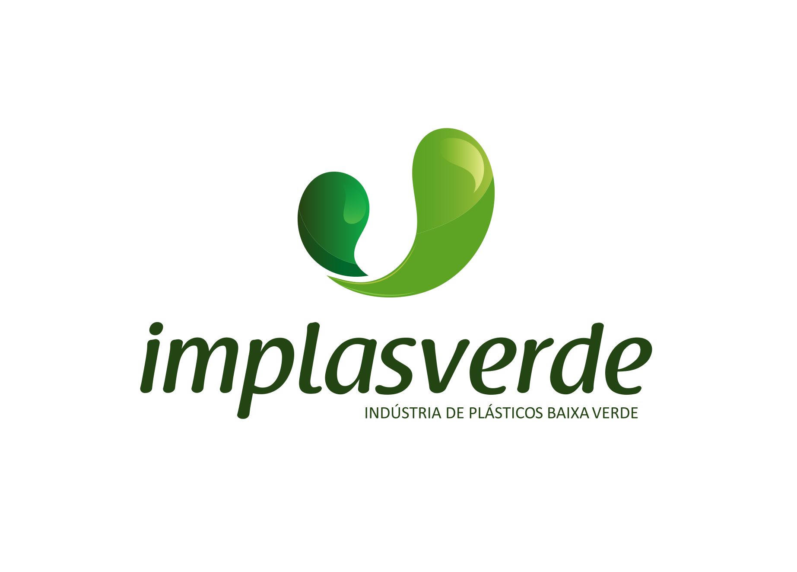

Identidade visual • Diretrizes • Aplicações
Este manual reúne as principais diretrizes para utilização da identidade visual da Implasverde, garantindo consistência, reconhecimento e força para a marca.
A identidade visual da Implasverde combina a força do verde com uma comunicação moderna, profissional e próxima.
O logotipo deve permanecer visualmente íntegro para preservar seu reconhecimento em diferentes materiais.
Sempre utilize a logo sobre fundos que garantam contraste suficiente.
Evite aproximar textos, imagens ou outros elementos excessivamente da marca.
O verde é o principal elemento cromático da Implasverde. A combinação entre os diferentes tons cria hierarquia, contraste e reconhecimento.
A combinação tipográfica da Implasverde cria uma comunicação contemporânea, profissional e versátil.
Poppins — utilizada como principal fonte das artes.
↗ Baixar / acessar PoppinsGaret Heavy — utilizada em títulos, chamadas e elementos de destaque.
↗ Baixar Garet A Type Forward disponibiliza gratuitamente Garet Book e Garet Heavy. Para outros pesos, consulte a licença da família.Halimun — utilizada pontualmente em elementos especiais e detalhes gráficos.
↗ Baixar Halimun A versão gratuita disponibilizada no DaFont é destinada para uso pessoal. Para utilização comercial ou corporativa, consulte a licença comercial da Creatype Studio.A comunicação visual deve equilibrar profissionalismo, proximidade e inovação, reforçando a percepção de uma empresa sólida e confiável.
Uma marca segura, consistente e comprometida com seus clientes.
Comunicação que valoriza produtos, processos e resultados.
Visual atual, criativo e conectado às necessidades do mercado.
Uma comunicação humana, clara e acessível.
A identidade pode assumir diferentes combinações, mantendo sempre a paleta e a hierarquia visual da marca.
Ideal para comunicação institucional, campanhas e conteúdos de destaque.
Combinação de maior impacto para campanhas, anúncios e peças promocionais.
Indicado para materiais informativos, apresentações e conteúdos mais leves.
A consistência é essencial para fortalecer a identidade visual da Implasverde.
Direção para as artes
As redes sociais devem manter uma identidade visual reconhecível mesmo quando o conteúdo abordar diferentes produtos, campanhas e temas.
Embalagem também
Qualidade • Resistência • Confiançavende o produto.
Sua marca
Soluções em embalagensmerece destaque.
Qualidade que
#Implasverdeacompanha seu negócio.